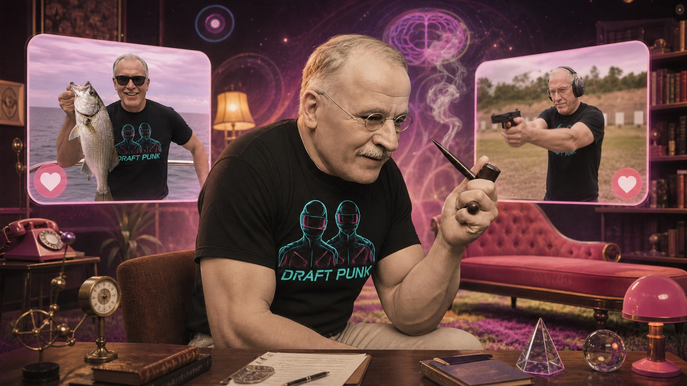
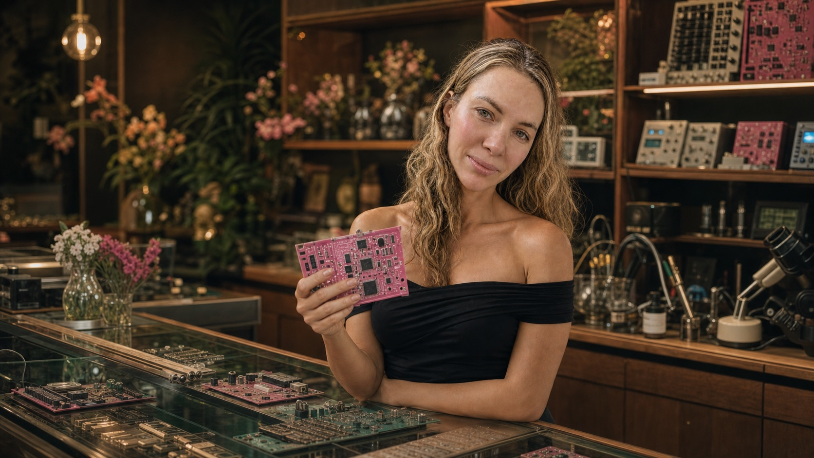
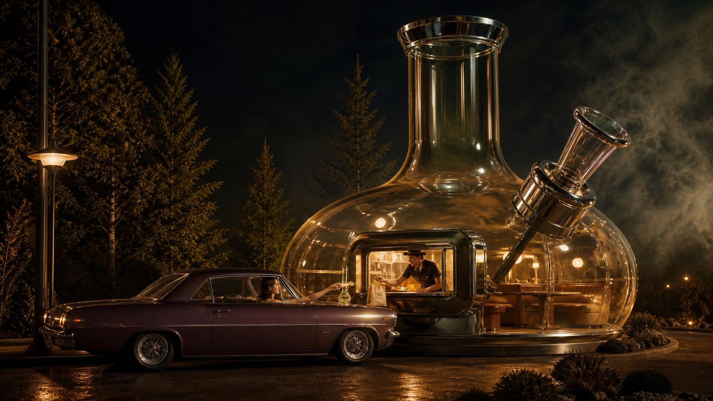

01
OpenShiba
Open-source AI for dogs who refuse closed ecosystems.
Long short-term
memory.
We invest in companies other firms are too sober to understand.
See what we funded ↓Current portfolio
Open-source AI for dogs who refuse closed ecosystems.
An AI travel agent for journeys with excellent basslines.
A grocery co-op for snacks that betrayed the food pyramid.
Groceries that love you back and never ask for your zip code.
Quantum computing powered by superposition and suspiciously good vibes.
The first speaker engineered to make one perfect pee sound.
Pot delivered by drone before you forget why you ordered it.
Travel to your party through telepathy and one suspicious button.
Small-batch psychedelic tea for extremely long afternoon meetings.

Swipe right on someone who understands your attachment style and your mother.
Robot dogs that walk your normal dog and judge its biomechanics.

A circuit-board shop where hot girls are never asked if they know what a resistor is.
A meme coin with a billion-dollar valuation and excellent posture.
Servants as a Service - help on demand, boundaries sold separately.

Like coffee drive-through, but the building is a bong and so is the cup.
TelePartyClick after dark. Adults only, obviously.
Not a company. A foreign policy.